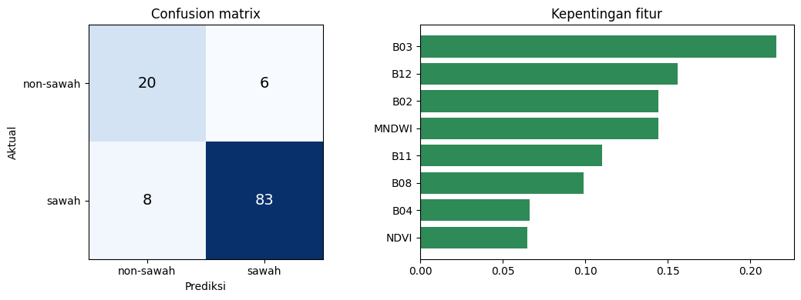
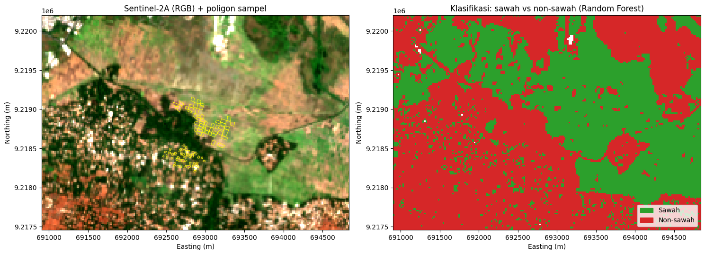

Klasifikasi Sawah vs Non-Sawah dengan Sentinel-2A (Random Forest)#
Notebook ini mengerjakan:
50 sampel sawah dan 50 sampel non-sawah (poligon dari QGIS)
Klasifikasi 2 kelas:
0 = non-sawah,1 = sawahData Sentinel-2A (L2A) format GeoTIFF dengan band B02, B03, B04, B08, B11, B12
Alur: baca citra → baca sampel → rasterisasi sampel → bagi latih/uji per poligon → latih Random Forest → evaluasi → peta hasil (TIF).
File yang dibutuhkan (upload ke Colab, atau taruh di folder yang sama dengan notebook):
File |
Isi |
|---|---|
|
Raster 6 band (urutan B02, B03, B04, B08, B11, B12) |
|
Poligon sampel sawah |
|
Poligon sampel non-sawah |
Format sampel boleh .gpkg, .shp, atau .geojson. Ubah nama file di sel Pengaturan bila berbeda.
1. Instalasi dan impor#
!pip -q install rasterio geopandas scikit-learn
import os, warnings
import numpy as np
import pandas as pd
import geopandas as gpd
import rasterio
from rasterio import features
from shapely.geometry import box
import matplotlib.pyplot as plt
from matplotlib.colors import ListedColormap
from matplotlib.patches import Patch
from sklearn.ensemble import RandomForestClassifier
from sklearn.metrics import (confusion_matrix, accuracy_score,
cohen_kappa_score, classification_report)
warnings.filterwarnings('ignore')
2. Pengaturan#
# --- File input ---
TIF_PATH = 'GeoTIFF.tif'
SAWAH_PATH = 'sawah.gpkg'
NONSAWAH_PATH = 'non_sawah.gpkg'
# --- File output ---
OUT_TIF = 'klasifikasi_sawah.tif'
OUT_TXT = 'hasil_evaluasi.txt'
OUT_PNG = 'peta_klasifikasi.png'
# --- Parameter ---
N_SAMPEL = 50 # jumlah poligon per kelas
PORSI_UJI = 0.3 # 30% poligon untuk uji, 70% untuk latih
N_POHON = 200 # jumlah pohon Random Forest
SEED = 42
# --- Filter awan sederhana ---
# TIF dari Copernicus Browser tidak punya band awan (SCL), jadi dipakai ambang
# reflektansi: piksel yang terang di Blue, Green, dan Red dianggap awan.
# Set PAKAI_FILTER_AWAN = False untuk mematikannya.
PAKAI_FILTER_AWAN = True
BATAS_AWAN = 0.25
# Urutan band di TIF
NAMA_BAND = ['B02', 'B03', 'B04', 'B08', 'B11', 'B12']
KELAS = {0: 'non-sawah', 1: 'sawah'}
3. Upload file (khusus Google Colab)#
Jalankan sel ini kalau file belum ada di Colab. Di komputer lokal, sel ini otomatis dilewati.
perlu = [TIF_PATH, SAWAH_PATH, NONSAWAH_PATH]
kurang = [f for f in perlu if not os.path.exists(f)]
if kurang:
try:
from google.colab import files
print('File belum ada:', kurang)
print('Pilih file-nya (boleh banyak sekaligus)...')
files.upload()
except ImportError:
pass
kurang = [f for f in perlu if not os.path.exists(f)]
assert not kurang, f'File masih belum ditemukan: {kurang}. Cek nama file di sel Pengaturan.'
print('Semua file ada:', perlu)
File belum ada: ['GeoTIFF.tif']
Pilih file-nya (boleh banyak sekaligus)...
Saving GeoTIFF.tif to GeoTIFF.tif
Saving non_sawah.gpkg to non_sawah (1).gpkg
Saving sawah.gpkg to sawah (1).gpkg
Semua file ada: ['GeoTIFF.tif', 'sawah.gpkg', 'non_sawah.gpkg']
4. Baca citra Sentinel-2A#
Dari 6 band dihitung dua indeks tambahan:
NDVI = (NIR − Red) / (NIR + Red), menunjukkan kerapatan vegetasi
MNDWI = (Green − SWIR1) / (Green + SWIR1), menunjukkan air/genangan (penting untuk sawah)
with rasterio.open(TIF_PATH) as src:
X = src.read().astype('float32')
transform, crs, profile = src.transform, src.crs, src.profile
bounds = src.bounds
nodata = src.nodata
nb, ny, nx = X.shape
assert nb == 6, f'Raster harus 6 band, ditemukan {nb}'
# Piksel tanpa data
tanpa_data = ~np.isfinite(X).all(axis=0)
if nodata is not None:
tanpa_data |= (X == nodata).all(axis=0)
tanpa_data |= (X == 0).all(axis=0)
print(f'Ukuran citra: {nx} x {ny} piksel | CRS: {crs} | piksel tanpa data: {tanpa_data.mean()*100:.1f}%')
print('Rentang nilai tiap band (harus kira-kira 0 sampai 1 untuk reflektansi):')
for i, n in enumerate(NAMA_BAND):
print(f' {n}: min {np.nanmin(X[i]):.3f} | maks {np.nanmax(X[i]):.3f}')
eps = 1e-6
ndvi = (X[3] - X[2]) / (X[3] + X[2] + eps)
mndwi = (X[1] - X[4]) / (X[1] + X[4] + eps)
F = np.concatenate([X, ndvi[None], mndwi[None]])
NAMA_FITUR = NAMA_BAND + ['NDVI', 'MNDWI']
# Filter awan sederhana
awan = np.zeros((ny, nx), dtype=bool)
if PAKAI_FILTER_AWAN:
awan = (X[0] > BATAS_AWAN) & (X[1] > BATAS_AWAN) & (X[2] > BATAS_AWAN)
print(f'Piksel terdeteksi awan: {awan.mean()*100:.1f}%')
Ukuran citra: 198 x 139 piksel | CRS: EPSG:32749 | piksel tanpa data: 0.0%
Rentang nilai tiap band (harus kira-kira 0 sampai 1 untuk reflektansi):
B02: min 0.012 | maks 0.473
B03: min 0.026 | maks 0.518
B04: min 0.011 | maks 0.566
B08: min 0.039 | maks 0.778
B11: min 0.113 | maks 0.644
B12: min 0.055 | maks 0.689
Piksel terdeteksi awan: 0.1%
5. Baca sampel poligon#
Sampel dibaca, disamakan CRS-nya dengan citra, lalu diambil tepat N_SAMPEL poligon per kelas.
def baca_sampel(path, label, nama):
g = gpd.read_file(path).to_crs(crs)
g = g[g.geometry.notna() & ~g.geometry.is_empty].copy()
total = len(g)
if total > N_SAMPEL:
g = g.sample(N_SAMPEL, random_state=SEED)
g = g[['geometry']].copy()
g['kelas'] = label
print(f'{nama}: {total} poligon di file -> dipakai {len(g)}')
return g
g_non = baca_sampel(NONSAWAH_PATH, 0, 'non-sawah')
g_sawah = baca_sampel(SAWAH_PATH, 1, 'sawah')
gdf = pd.concat([g_non, g_sawah], ignore_index=True)
gdf['pid'] = gdf.index + 1 # id unik per poligon
area_citra = box(bounds.left, bounds.bottom, bounds.right, bounds.top)
dalam = gdf.geometry.intersects(area_citra)
print(f'Poligon yang menyentuh area citra: {int(dalam.sum())} dari {len(gdf)}')
if dalam.sum() < len(gdf):
print('PERINGATAN: ada poligon di luar citra. Poligon itu diabaikan otomatis.')
non-sawah: 50 poligon di file -> dipakai 50
sawah: 50 poligon di file -> dipakai 50
Poligon yang menyentuh area citra: 100 dari 100
6. Rasterisasi sampel ke grid citra#
def burn(kolom):
return features.rasterize(
((geom, int(v)) for geom, v in zip(gdf.geometry, gdf[kolom])),
out_shape=(ny, nx), transform=transform, fill=-1, dtype='int32')
kelas_r = burn('kelas') # -1 = bukan sampel
pid_r = burn('pid')
valid = (kelas_r >= 0) & ~tanpa_data & ~awan & np.isfinite(F).all(axis=0)
for k, n in KELAS.items():
m = valid & (kelas_r == k)
p = np.unique(pid_r[m])
print(f'Kelas {k} ({n}): {len(p)} poligon terpakai, {int(m.sum())} piksel bebas awan')
assert valid.sum() > 0, 'Tidak ada piksel sampel di dalam citra. Cek CRS dan posisi poligon.'
Kelas 0 (non-sawah): 48 poligon terpakai, 79 piksel bebas awan
Kelas 1 (sawah): 50 poligon terpakai, 249 piksel bebas awan
7. Bagi data latih dan uji#
Pembagian dilakukan per poligon, bukan per piksel. Kalau per piksel, piksel yang bertetangga bisa masuk ke latih dan uji sekaligus sehingga akurasi terlihat terlalu bagus.
rng = np.random.default_rng(SEED)
id_uji = []
for k in KELAS:
ids = np.unique(pid_r[valid & (kelas_r == k)])
rng.shuffle(ids)
n_uji = max(1, int(round(len(ids) * PORSI_UJI)))
id_uji += list(ids[:n_uji])
is_uji = np.isin(pid_r, id_uji)
tr = valid & ~is_uji
te = valid & is_uji
n_poly_te = len(id_uji)
n_poly_tr = len(np.unique(pid_r[tr]))
print(f'Poligon training: {n_poly_tr} | testing: {n_poly_te}')
print(f'Piksel training: {int(tr.sum())} | testing: {int(te.sum())}')
X_tr, y_tr = F[:, tr].T, kelas_r[tr]
X_te, y_te = F[:, te].T, kelas_r[te]
Poligon training: 69 | testing: 29
Piksel training: 211 | testing: 117
8. Latih Random Forest#
class_weight='balanced' dipakai karena jumlah piksel sawah biasanya jauh lebih sedikit daripada non-sawah.
rf = RandomForestClassifier(
n_estimators=N_POHON, class_weight='balanced',
n_jobs=-1, random_state=SEED)
rf.fit(X_tr, y_tr)
print('Model selesai dilatih.')
Model selesai dilatih.
9. Evaluasi#
pred = rf.predict(X_te)
cm = confusion_matrix(y_te, pred, labels=[0, 1])
oa = accuracy_score(y_te, pred)
kappa = cohen_kappa_score(y_te, pred)
lap = classification_report(y_te, pred, labels=[0, 1],
target_names=[KELAS[0], KELAS[1]], digits=3)
imp = sorted(zip(NAMA_FITUR, rf.feature_importances_), key=lambda t: -t[1])
teks = []
teks.append('Confusion matrix (baris=aktual, kolom=prediksi; urutan 0=non-sawah, 1=sawah):')
teks.append(str(cm))
teks.append(f'Overall Accuracy : {oa:.4f}')
teks.append(f'Kappa : {kappa:.4f}')
teks.append(lap)
teks.append('Kepentingan fitur:')
for n, v in imp:
teks.append(f' {n:6s} {v:.3f}')
hasil_teks = '\n'.join(teks)
print(hasil_teks)
Confusion matrix (baris=aktual, kolom=prediksi; urutan 0=non-sawah, 1=sawah):
[[20 6]
[ 8 83]]
Overall Accuracy : 0.8803
Kappa : 0.6631
precision recall f1-score support
non-sawah 0.714 0.769 0.741 26
sawah 0.933 0.912 0.922 91
accuracy 0.880 117
macro avg 0.823 0.841 0.831 117
weighted avg 0.884 0.880 0.882 117
Kepentingan fitur:
B03 0.215
B12 0.156
B02 0.144
MNDWI 0.144
B11 0.110
B08 0.099
B04 0.066
NDVI 0.065
# Confusion matrix dan kepentingan fitur dalam bentuk gambar
fig, ax = plt.subplots(1, 2, figsize=(11, 4))
im = ax[0].imshow(cm, cmap='Blues')
ax[0].set_xticks([0, 1]); ax[0].set_yticks([0, 1])
ax[0].set_xticklabels([KELAS[0], KELAS[1]]); ax[0].set_yticklabels([KELAS[0], KELAS[1]])
ax[0].set_xlabel('Prediksi'); ax[0].set_ylabel('Aktual')
ax[0].set_title('Confusion matrix')
for i in range(2):
for j in range(2):
ax[0].text(j, i, int(cm[i, j]), ha='center', va='center',
color='white' if cm[i, j] > cm.max() / 2 else 'black', fontsize=14)
nm, vl = zip(*imp)
ax[1].barh(nm[::-1], vl[::-1], color='#2e8b57')
ax[1].set_title('Kepentingan fitur')
plt.tight_layout()
plt.show()

10. Klasifikasi seluruh citra#
Hasil disimpan sebagai GeoTIFF: 0 = non-sawah, 1 = sawah, 255 = tanpa data/awan.
flat = F.reshape(F.shape[0], -1).T
ok = np.isfinite(flat).all(axis=1)
hasil = np.full(flat.shape[0], 255, dtype='uint8')
hasil[ok] = rf.predict(flat[ok])
hasil = hasil.reshape(ny, nx)
hasil[tanpa_data] = 255
hasil[awan] = 255
profile.update(count=1, dtype='uint8', nodata=255, compress='lzw')
with rasterio.open(OUT_TIF, 'w', **profile) as dst:
dst.write(hasil, 1)
luas_px = abs(transform.a * transform.e)
n_sawah = int((hasil == 1).sum()); n_non = int((hasil == 0).sum())
print(f'Tersimpan: {OUT_TIF}')
print(f'Sawah : {n_sawah} piksel (~{n_sawah*luas_px/10000:.1f} ha)')
print(f'Non-sawah : {n_non} piksel (~{n_non*luas_px/10000:.1f} ha)')
WARNING:rasterio._env:CPLE_IllegalArg in klasifikasi_sawah.tif: BLOCKXSIZE can only be used with TILED=YES
Tersimpan: klasifikasi_sawah.tif
Sawah : 11581 piksel (~453.9 ha)
Non-sawah : 15911 piksel (~623.6 ha)
11. Peta hasil#
# Citra warna asli (B04, B03, B02) dengan peregangan kontras
rgb = np.stack([X[2], X[1], X[0]], axis=-1)
lo, hi = np.nanpercentile(rgb[~tanpa_data], (2, 98))
rgb = np.clip((rgb - lo) / (hi - lo + eps), 0, 1)
rgb[tanpa_data] = 1
warna = ListedColormap(['#d62728', '#2ca02c']) # 0 = merah (non-sawah), 1 = hijau (sawah)
peta = np.ma.masked_equal(hasil, 255)
fig, ax = plt.subplots(1, 2, figsize=(15, 6.5))
ext = [bounds.left, bounds.right, bounds.bottom, bounds.top]
ax[0].imshow(rgb, extent=ext)
gdf.boundary.plot(ax=ax[0], color='yellow', linewidth=0.6)
ax[0].set_title('Sentinel-2A (RGB) + poligon sampel')
ax[1].imshow(rgb, extent=ext, alpha=0.35)
ax[1].imshow(peta, cmap=warna, vmin=0, vmax=1, extent=ext, interpolation='nearest')
ax[1].set_title('Klasifikasi: sawah vs non-sawah (Random Forest)')
ax[1].legend(handles=[Patch(color='#2ca02c', label='Sawah'),
Patch(color='#d62728', label='Non-sawah')],
loc='lower right')
for a in ax:
a.set_xlabel('Easting (m)'); a.set_ylabel('Northing (m)')
plt.tight_layout()
plt.savefig(OUT_PNG, dpi=150, bbox_inches='tight')
plt.show()

12. Simpan hasil evaluasi dan unduh#
sampel_info = [
f'Citra: {nx} x {ny} piksel | CRS: {crs}',
f'Poligon training: {n_poly_tr} | testing: {n_poly_te}',
f'Piksel training: {int(tr.sum())} | testing: {int(te.sum())}',
'',
]
with open(OUT_TXT, 'w', encoding='utf-8') as f:
f.write('\n'.join(sampel_info) + hasil_teks)
print(f'Tersimpan: {OUT_TXT}')
try:
from google.colab import files
for f in [OUT_TIF, OUT_TXT, OUT_PNG]:
files.download(f)
except ImportError:
print('Bukan di Colab: ambil file hasil dari folder kerja.')
Tersimpan: hasil_evaluasi.txt
Catatan interpretasi#
Overall Accuracy = persentase piksel uji yang benar. Kappa = kesepakatan setelah memperhitungkan tebakan acak (di atas 0,8 sangat baik).
Recall sawah = berapa persen sawah sebenarnya yang berhasil ditemukan. Precision sawah = berapa persen tebakan sawah yang memang sawah.
Akurasi bisa terlihat terlalu tinggi bila poligon uji bersebelahan dengan poligon latih. Sebarkan sampel ke seluruh area, jangan hanya di satu gerombolan.
Satu tanggal citra hanya menangkap satu fase tanam. Sawah yang sedang bera atau kering bisa mirip lahan kosong. Untuk hasil lebih baik gunakan beberapa tanggal.
Filter awan di notebook ini hanya ambang reflektansi sederhana. Untuk hasil lebih rapi gunakan band SCL dari produk L2A.